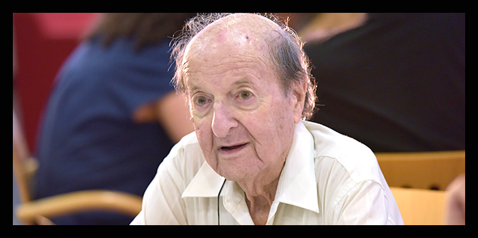

פעילותו של פרופ' אדלר כראש מדור החינוך של בית ספר מנדל למנהיגות חינוכית ביטאה, דרך הדוגמה האישית, את אישיותו ותפיסת עולמו החינוכית. מדור החינוך בהנהגתו יצר יחסי אמון בלתי אמצעיים בין העמיתים וחברי הסגל, עבודת צוות, שיתופיות וקולגיאליות תוך ניהול תומך "מאחור" לצד הובלת שינויים עמוקים במדור בגישה פרקטית ובלתי מתפשרת. תחת הובלתו של אדלר התרחב מדור החינוך בבית הספר ונבנה כמדור שיתופי שבו כל אחד מחברי הסגל קיבל ביטוי לרעיונותיו ותפיסת עולמו; רכיבים ופעילויות בתוכנית הלימודים עברו תהליך של אינטגרציה ואוחדו לתוך מהלך שלם ובעל היגיון פנימי תחת מטריית מדור החינוך; וקודמו מהלכים לשיתוף העמיתים בתוכנית הלימודים, שבאו לידי ביטוי בבחירה ובתכנון עצמאי של למידת סוגיות חינוכיות נבחרות. כל אלו הפכו את מדור החינוך דאז למדור מוביל, פורץ דרך, שתרם והשפיע על פיתוחן של יוזמות חינוכיות רבות שהוקמו על-ידי עמיתים ובוגרים. את עבודתו החשובה הזאת, ואת הליווי האישי המסור שהעניק לעמיתים בתקופתם בבית הספר המשיך בתפקידו כיועץ ואיש סגל בכיר ביחידת הבוגרים דרך ייעוצים אישיים בשדה שסייעו לבוגרים בדילמות ובצומתי החלטה אישיים, מקצועיים ופדגוגיים. עם רבים מהעמיתים שלימד ומהבוגרים שליווה אף שמר על קשרים אישיים חמים, וכך ממשיכה משנתו החינוכית להשפיע אור בעולם.
אדלר השלים תואר מוסמך בסוציולוגיה ובחינוך ולאחר מכן דוקטורט בחינוך, ובמסגרתו חקר את הנשירה מבתי הספר התיכוניים. בשנת 1966 הצטרף לסגל האוניברסיטה העברית, עבד בה עד צאתו לגמלאות, ולאחר מכן שימש כפרופ' אמריטוס לחינוך. בשנים 1992-1969 עמד אדלר בראש המגמה לסוציולוגיה של החינוך בבית הספר לחינוך של האוניברסיטה העברית, ובשנת 1968 הוזמן לנהל את המכון לחקר טיפוח החינוך על-ידי פרופ' סימור פוקס, שיזם אותו. את המכון ניהל למעלה משני עשורים, ובו נערכו מחקרים שעסקו בקידום קבוצות חלשות בחברה – החל בגיל הרך וכלה בהשכלת מבוגרים. התוכניות שפותחו במכון יושמו במסגרות חינוכיות בארץ ובעולם. בשנת 1975 היה אדלר ממייסדי כפר הנוער מנו"ף לבני נוער מחוסרי עבודה שאינם במסגרות חינוכיות מוסדרות, ומהקמת הכפר ועד מותו עמד בראש הנהלת עמותת הכפר. בין תפקידיו הציבוריים השונים לאורך השנים, הוא עמד בראשן של ועדות רבות שעסקו בנוער בסיכון ונוער מנותק, בקליטת עלייה, בפיתוח החינוך העל-יסודי והחינוך הבלתי פורמלי ועוד. בשנת 1992 מונה אדלר למנהל בית הספר לחינוך ולראש תחום מחקר החינוך במרכז לחקר מדיניות חברתית באוניברסיטה העברית. במהלך השנים שימש כמרצה וחוקר אורח באוניברסיטאות הארוורד, סטנפורד, שיקגו ורטגרס; כמו כן שימש כחבר בחבר הנאמנים וכראש תחום חינוך במרכז טאוב לחקר מדיניות ציבורית.
אדלר היה מחלוצי חקר הסוציולוגיה של החינוך ומחוקרי החינוך החשובים בישראל. מחקריו עסקו בחינוך ככלי לשינוי חברתי, במקומו של החינוך בקידומם של יוצאי שכבות חברתיות חלשות ובקליטת נוער עולה, ובתרבות נוער בעידן המודרני. אדלר פעל רבות בתחומים אלו במישור האקדמי, לצד המעשי, למען צמצום פערים בחברה דרך זירת החינוך, ומחקריו תרמו רבות לקביעת מדיניות החינוך בארץ. בשנת 2006 קיבל על פועלו הנרחב בתחום החינוך את פרס ישראל לחינוך.
{kind=link}